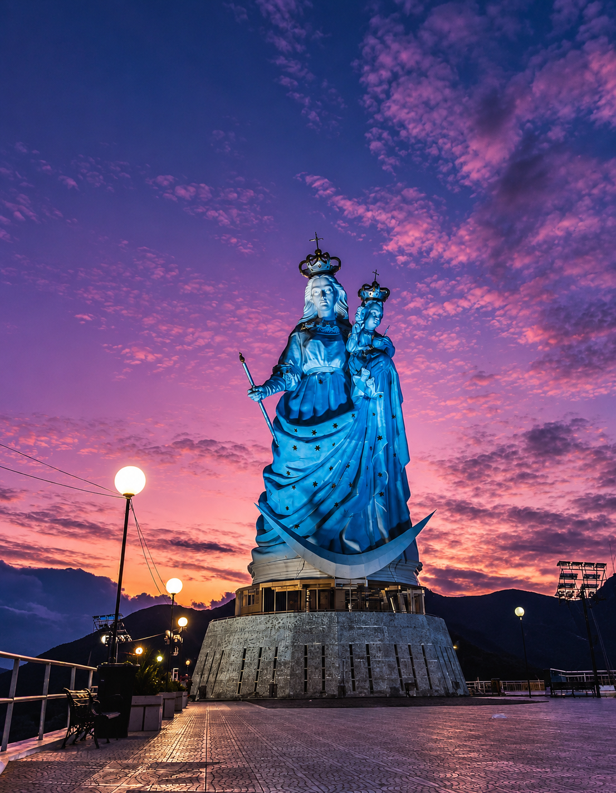
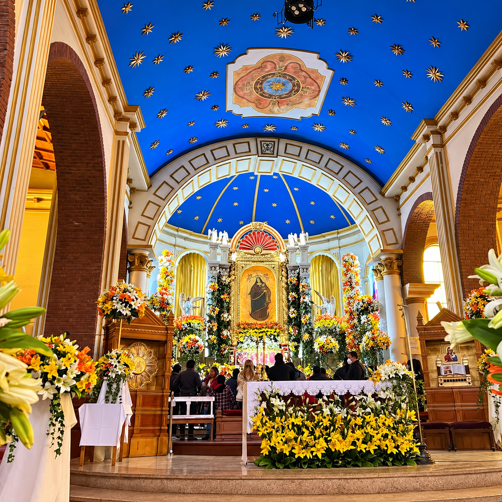
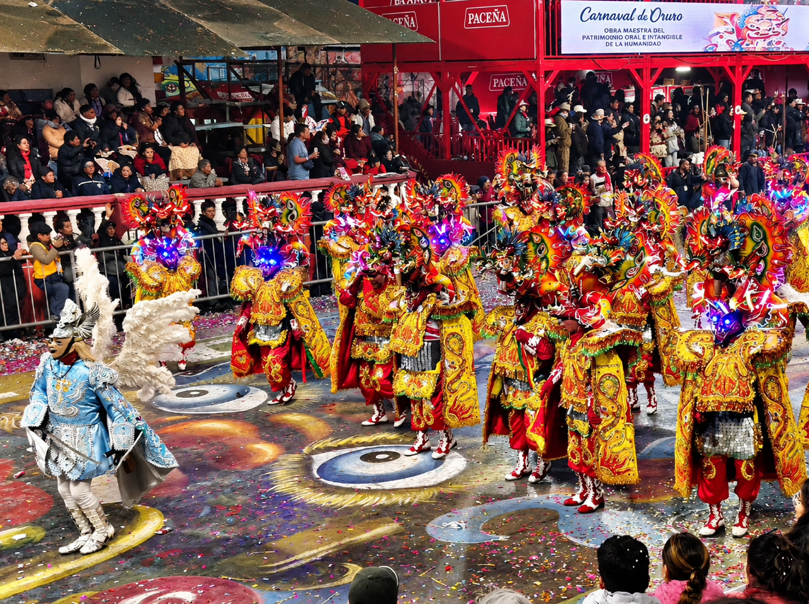
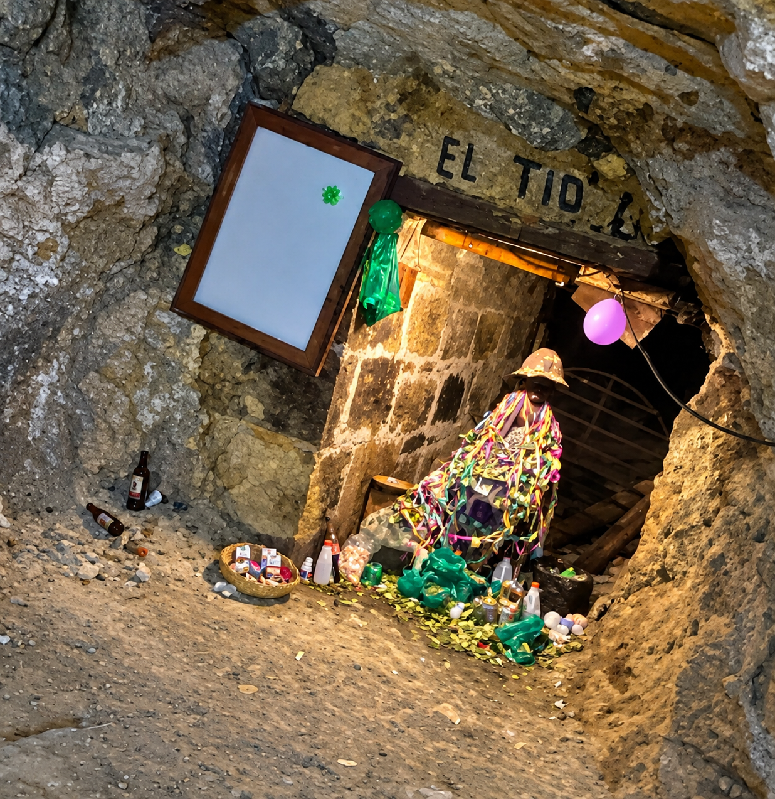

01
Descubre la historia, las leyendas y las tradiciones que forman parte de la identidad cultural de Oruro.
Cuatro símbolos que forman parte de una de las leyendas más conocidas de Oruro.
Esfuerzo y prosperidad
Transformación y conocimiento
Lluvia y abundancia
Protección y buena suerte
La historia de la Virgen del Socavón está profundamente relacionada con la tradición minera, la fe y las expresiones culturales de Oruro.
Conocer la historiaAparición de la Virgen en el socavón.
Crecimiento de la devoción de los mineros.
El Carnaval comienza a tomar fuerza.
Reconocimiento como Patrimonio Cultural.




Fe que protege · Tradición que une
Volver al inicio